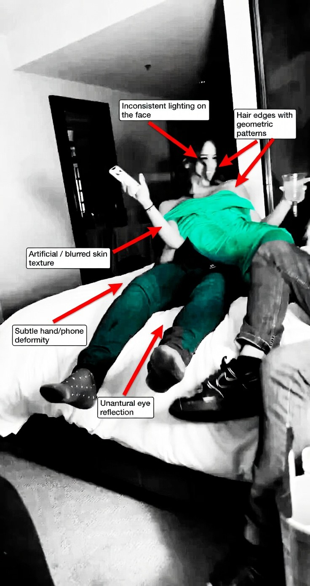
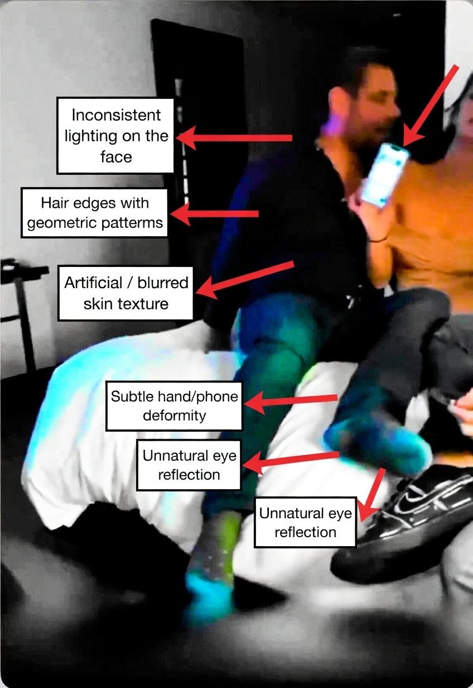
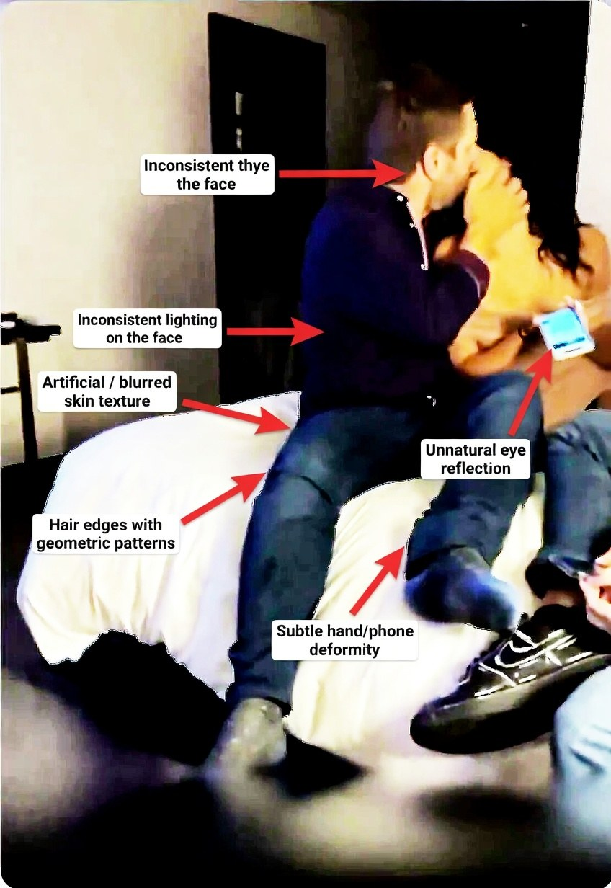
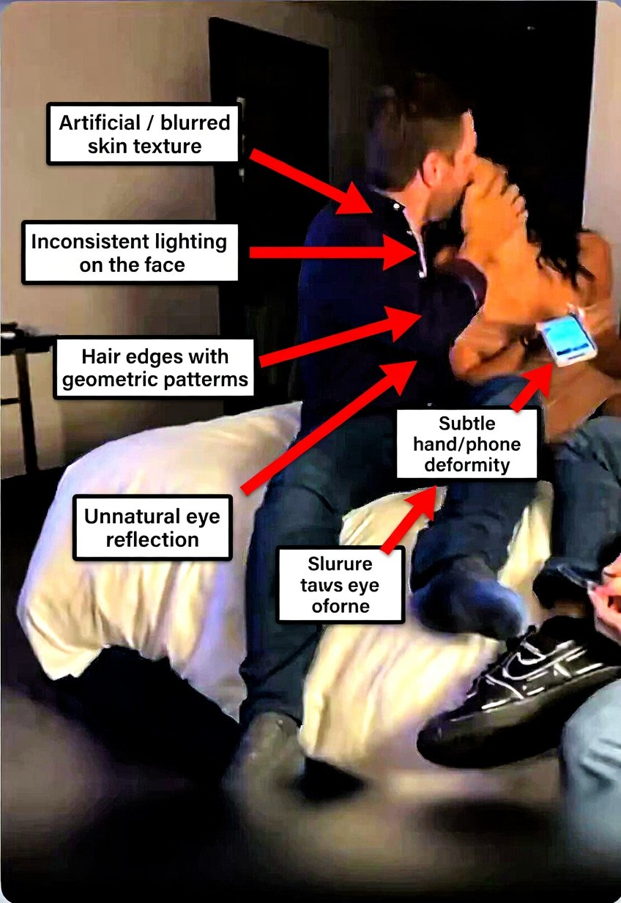
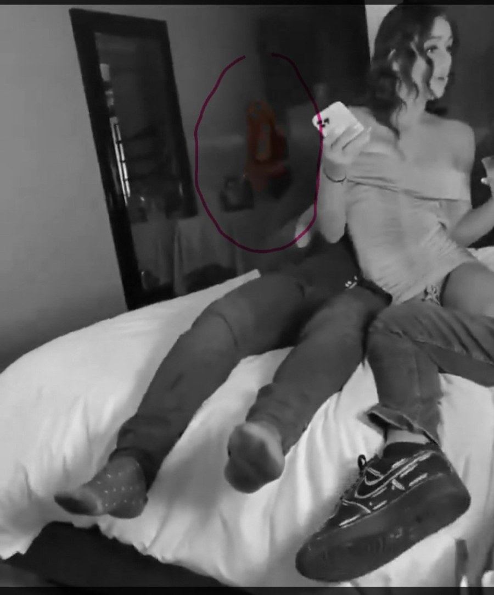

What this project covers
This record documents technical indicators seen in frames extracted from a short video, with attention to visual consistency, repeated local artifacts, suspicious crops, and the behavior of the final file that was reviewed.
Preliminary public report
This page lays out a preliminary review of distributed frames taken from a short public video clip. The goal is simple: describe what shows up in the available samples, note where the patterns repeat, and keep the write-up technical, impersonal, and readable.
Context
This record documents technical indicators seen in frames extracted from a short video, with attention to visual consistency, repeated local artifacts, suspicious crops, and the behavior of the final file that was reviewed.
The text stays impersonal on purpose. No names, no personal identification, no claims about who made anything, and no repost of the full source clip. The page only describes what was visible in the indicators and what could reasonably be said from the material that was actually available.
Taken together, the review shows the same general signals in both sets. The second set looks more uniform and more stable. The first set points in the same direction, but with more local variation from frame to frame.
Method
The clip was split into still samples so face detail, hair edges, skin texture, object contours, and background shapes could be checked without the noise of continuous motion.
Instead of leaning only on encoder reference frames, 13 distributed samples were used because they do a better job of catching small local inconsistencies and repeated visual behavior.
The findings were grouped into two sets, making it easier to tell whether the indicators were random one-offs or part of a repeated pattern across the short segment.
On top of the visual review, the final file was treated like a technical object, looking at resolution, coding profile, timing regularity, keyframe behavior, and signs of crop or intermediate export.
The reviewed file is short and only carries two keyframes at a regular interval. That helps explain the file anatomy, but it is too thin for a serious visual read. For faces, contours, texture, and local artifacts, the distributed frames are the more careful choice.
The reviewed clip behaves like a packaged distribution file, not like an obvious raw camera original. Timing looks stable, but the final resolution, coding profile, and suggested crop all point toward prior processing, export, or platform handling somewhere in the chain.
This is not a court filing and not a final expert report. Publicly, its job is to document technical indicators in a clear way. Full audit trails, raw comparisons, expanded stills, and chain-of-custody material belong in the proper review context.
Findings
In multiple samples, the light landing on the face and nearby areas does not seem to track the rest of the scene in a natural way. Local contrast shifts abruptly, and in some spots the apparent facial volume does not line up well with the room lighting.
Skin, hair, and a few edge regions show sections that look overly smooth, blurred, or oddly geometric. Instead of continuous organic detail, some areas drift toward a plastic finish, broken texture, or contour wobble across samples.
Hands, the phone, reflections, and limb contours show small shape issues that are hard to explain as normal motion alone. They are subtle, but they repeat often enough that they matter more as a cluster than as any single frame event.
The first block keeps the same overall direction, but it is more uneven internally. Some samples feel softer, while others stack several indicators in the same frame. That makes frame-by-frame reading more important and makes any one still weaker on its own.
The second block stands out for stability. The same indicator types keep showing up with low spread between samples. In a forensic read, that kind of uniformity is one of the most important parts of the full set.
A follow-up look at the sampled frames turned up a faint background cutout that seems to suggest an extra human-like shape or residual outline. Because the frames are tightly cropped and the segment is short, this cannot be treated as a final claim. It still deserves to be logged, since synthetic material can sometimes hallucinate extra people, partial figures, or leftover human-shaped forms in the background.
No single indicator should be sold as a verdict. The useful part is convergence: inconsistent lighting, artificial texture, geometric hair edges, subtle local deformation, odd reflections, and stable repetition across samples show up together often enough to justify formal documentation.
“The most careful public reading is not to overclaim. It is to document that the reviewed set shows repeated visual and structural inconsistencies consistent with composed, generated, or heavily processed material.”
File structure
The reviewed clip presents as a short MP4 encoded with H.264 video and AAC audio in portrait orientation, with a high nominal frame rate and a brief runtime. That profile fits a circulation-ready file much better than an obvious raw camera master.
The internal cadence of the reviewed file looks stable, without obvious large timing breaks in the final packaged object. That does not authenticate the content, but it does suggest the final output was technically organized and clean as a delivered file.
The final resolution does not line up with a small list of common portrait outputs, and there is a mild sign of border crop. On its own, that is not proof of manipulation. In context, it leans more toward intermediate export, resize, or a social-platform pipeline.
Annotated frames
The gallery below uses annotated analytical crops to highlight only the indicators that were observed. Public use should stay descriptive and impersonal. The buttons share the frame section and the analytical context, not the raw clip itself.

Annotated crop highlighting inconsistent facial lighting, geometric hair edges, artificial skin texture, local hand or phone deformation, and reflections that do not look fully natural.

Second annotated crop showing the same indicator types in a different pose. The key point here is persistence of the visual behavior, not just the existence of one isolated artifact.

Even with a different position, the same issues keep showing up: lighting that reads oddly, artificial texture transitions, and small contour problems in the more sensitive parts of the frame.

This crop reinforces the return of the same indicator groups, especially around the face, hair, side contours, and the object held by the main figure.
A follow-up review found a faint background crop that seems to hint at a residual human-like form. It is presented as a descriptive hypothesis, not a closed claim, because the visible area is tight and limited.

A second crop from the same region strengthens the case for logging the issue. In synthetic material, extra figures, humanoid shadows, or leftover background contours can show up as hallucination artifacts. The careful move here is to note it, not overstate it.
Conclusion
The combination of frame-level visual review and file-level structural review supports a preliminary assessment of relevant inconsistency. The strength of the project does not come from any single clue. It comes from the recurrence of the same pattern across distributed samples.
The available slice does not justify unlimited claims. What it does justify is organized, technical, and checkable documentation of signals that deserve closer scrutiny in a defensive, journalistic, or legal setting.
Contact
If a case needs a deeper read, frame by frame review, file structure notes, evidence organization, or an impersonal technical write-up, a detailed analysis can be requested directly.